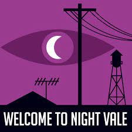

Hello, listeners. If you are seeing this website, then that means one of three things:
- You're new in town and you want to learn all there is about our desert community
- You heard my voice on the radio and wondered if this place was actually real
- You woke up in a room with no memory of who or where you were, and after solving various puzzles, each one more difficult and more elaborate than the last, you found a computer and this was the first thing you saw when powering it on
Nevertheless, you've found your way to this website, which means that you are curious about our town, and that the firewall has failed. I mean, it was bound to fail at some point. After all,
After having a bit of a recent disagreement with Desert Bluffs, Night Vale has been rebuilding their community piece by piece so that whoever visits here will be awe-inspired by our community. Or at least not run away screaming.
Due to the vigilant work of our newest student council member the Glow Cloud
Night Vale is the perfect place for anyone to visit. If you're planning on staying, we'll welcome you with a friendly greeting of pointing and saying "